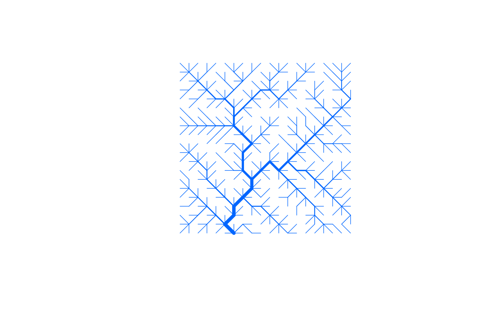
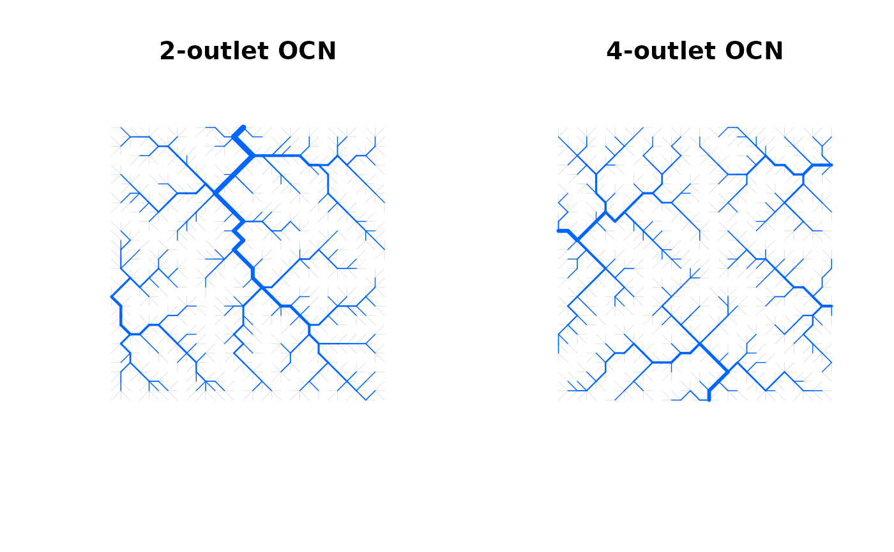

Create an Optimal Channel Network
create_OCN.RdFunction that performs the OCN search algorithm on a rectangular lattice and creates OCN at the flow direction (FD) level.
Usage
create_OCN(dimX, dimY, nOutlet = 1, outletSide = "S",
outletPos = round(dimX/3), periodicBoundaries = FALSE,
typeInitialState = NULL, flowDirStart = NULL, expEnergy = 0.5,
cellsize = 1, xllcorner = 0.5 * cellsize, yllcorner = 0.5 *
cellsize, nIter = 40 * dimX * dimY, nUpdates = 50,
initialNoCoolingPhase = 0, coolingRate = 1,
showIntermediatePlots = FALSE, thrADraw = 0.002 * dimX * dimY *
cellsize^2, easyDraw = NULL, saveEnergy = FALSE, saveExitFlag = FALSE,
saveN8 = FALSE, saveN4 = FALSE, displayUpdates = 1)Arguments
- dimX
Longitudinal dimension of the lattice (in number of pixels).
- dimY
Latitudinal dimension of the lattice (in number of pixels).
- nOutlet
Number of outlets. If
nOutlet = "All", all border pixels are set as outlets.- outletSide
Side of the lattice where the outlet(s) is/are placed. It is a vector of characters, whose allowed values are
"N"(northern side),"E","S","W". Its length must be equal tonOutlet.- outletPos
Vector of positions of outlets within the sides specified by
outletSide. IfoutletSide[i] = "N"or"S", thenoutletPos[i]must be a natural number in the interval1:dimX; ifoutletSide[i] = "W"or"E", thenoutletPos[i]must be a natural number in the interval1:dimY. IfnOutlet > 1is specified by the user andoutletSide,outletPosare not, a number of outlets equal tonOutletis randomly drawn among the border pixels. Its length must be equal tonOutlet.- periodicBoundaries
If
TRUE, periodic boundaries are applied. In this case, the lattice is the planar equivalent of a torus.- typeInitialState
Configuration of the initial state of the network. Possible values:
"I"(representing a valley);"T"(T-shaped drainage pattern);"V"(V-shaped drainage pattern);"H"(hip roof). Default value is set to"I", unless whennOutlet = "All", where default is"H". See Details for explanation on initial network state in the multiple outlet case.- flowDirStart
Matrix (
dimYbydimX) with custom initial flow directions. Possible entries toflowDirStartare natural numbers between 1 and 8, indicating direction of flow from one cell to the neighbouring one. Key is as follows:1+1 column
2-1 row, +1 column
3-1 row
4-1 row, -1 column
5-1 column
6+1 row, -1 column
7+1 row
8+1 row, +1 column
- expEnergy
Exponent of the functional
sum(A^expEnergy)that is minimized during the OCN search algorithm.- cellsize
Size of a pixel in planar units.
- xllcorner
Longitudinal coordinate of the lower-left pixel.
- yllcorner
Latitudinal coordinate of the lower-left pixel.
- nIter
Number of iterations for the OCN search algorithm.
- nUpdates
Number of updates given during the OCN search process (only effective if
any(displayUpdates,showIntermediatePlots)=TRUE.).- initialNoCoolingPhase, coolingRate
Parameters of the function used to describe the temperature of the simulated annealing algorithm. See details.
- showIntermediatePlots
If
TRUE, the OCN plot is updatednUpdatestimes during the OCN search process. Note that, for large lattices,showIntermediatePlots = TRUEmight slow down the search process considerably (especially wheneasyDraw = FALSE).- thrADraw
Threshold drainage area value used to display the network (only effective when
showIntermediatePlots = TRUE).- easyDraw
Logical. If
TRUE, the whole network is displayed (whenshowIntermediatePlots = TRUE), and pixels with drainage area lower thanthrADraware displayed in light gray. IfFALSE, only pixels with drainage area greater or equal tothrADraware displayed. Default isFALSEifdimX*dimY <= 40000, andTRUEotherwise. Note that settingeasyDraw = FALSEfor large networks might slow down the process considerably.- saveEnergy
If
TRUE,energyis saved (see Value for its definition).- saveExitFlag
If
TRUE,exitFlagis saved (see Value for its definition).- saveN8
If
TRUE, the adjacency matrix relative to 8-nearest-neighbours connectivity is saved.- saveN4
If
TRUE, the adjacency matrix relative to 4-nearest-neighbours connectivity is saved.- displayUpdates
State if updates are printed on the console while the OCN search algorithm runs.
0No update is given.
1An estimate of duration is given (only if
dimX*dimY > 1000, otherwise no update is given).2Progress updates are given. The number of these is controlled by
nUpdates
Value
A list whose objects are listed below. Variables that define the network at the FD level are wrapped in the sublist FD.
Adjacency matrices describing 4- or 8- nearest-neighbours connectivity among pixels are contained in lists N4 and N8, respectively.
FD$AVector (of length
dimX*dimY) containing drainage area values for all FD pixels (in square planar units).FD$WAdjacency matrix (
dimX*dimYbydimX*dimY) at the FD level. It is aspamobject.FD$downNodeVector (of length
dimX*dimY) representing the adjacency matrix at FD level in a vector form: ifFD$downNode[i] = jthenFD$W[i,j] = 1. Ifois the outlet pixel, thenFD$downNode[o] = 0.FD$X (FD$Y)Vector (of length
dimX*dimY) containing X (Y) coordinate values for all FD pixels.FD$nNodesNumber of nodes at FD level (equal to
dimX*dimY).FD$outletVector (of length
nOutlet) indices of pixels at FD level corresponding to outlets.FD$permVector (of length
dimX*dimY) representing a permutation of the FD pixels:perm[(which(perm==i) - FD$A[i] + 1):which(perm==i)]gives the indices of the pixels that drain into pixeli.energyInitInitial energy value.
energyVector (of length
nIter) of energy values for each stage of the OCN during the search algorithm (only present ifsaveEnergy = TRUE).exitFlagVector (of length
nIter) showing the outcome of the rewiring process (only present ifsaveExitFlag = TRUE). Its entries can assume one of the following values:0Rewiring is accepted.
1Rewiring is not accepted (because it does not lower
energyor according to the acceptance probability of the simulated annealing algorithm).2Rewiring is invalid because a loop in the graph was generated, therefore the network is no longer a direct acyclic graph.
3Rewiring is invalid because of cross-flow. This means that, for example, in a 2x2 cluster of pixel, the southwestern (SW) corner drains into the NE one, and SE drains into NW. Although this circumstance does not imply the presence of a loop in the graph, it has no physical meaning and is thereby forbidden.
N4$WAdjacency matrix (
dimX*dimYbydimX*dimY) that describes 4-nearest-neighbours connectivity between pixels:N4$W[i,j] = 1if pixeljshares an edge withi, and is null otherwise. It is saved only ifsaveN4 = TRUE.N8$WAdjacency matrix (
dimX*dimYbydimX*dimY) that describes 8-nearest-neighbours connectivity between pixels:N8$W[i,j] = 1if pixeljshares an edge or a vertex withi, and is null otherwise. It is saved only ifsaveN8 = TRUE.
Finally, dimX, dimY, cellsize, nOutlet, periodicBoundaries, expEnergy,
coolingRate, typeInitialState, nIter, xllcorner, yllcorner are passed to the list as they were included in the input
(except nOutlet = "All" which is converted to 2*(dimX + dimY - 2)).
Details
Simulated annealing temperature. The function that expresses the temperature of the simulated annealing process is as follows:
- if
i <= initialNoCoolingPhase*nIter: Temperature[i] = Energy[1]- if
initialNoCoolingPhase*nIter < i <= nIter: Temperature[i] = Energy[1]*(-coolingRate*(i - InitialNocoolingPhase*nIter)/nNodes)
where i is the index of the current iteration and Energy[1] = sum(A^expEnergy), with A denoting
the vector of drainage areas corresponding to the initial state of the network. According to the simulated annealing
principle, a new network configuration obtained at iteration i is accepted with probability equal to
exp((Energy[i] - Energy[i-1])/Temperature[i]) if Energy[i] < Energy[i-1].
To ensure convergence, it is recommended to use coolingRate values between 0.5 and 10 and initialNoCoolingPhase <= 0.3.
Low coolingRate and high initialNoCoolingPhase values cause the network configuration to depart more significantly from the initial state.
If coolingRate < 0.5 and initialNoCoolingPhase > 0.1 are used, it is suggested to increase nIter with respect to the default value in order to guarantee convergence.
Initial network state.
If nOutlet > 1, the initial state is applied with regards to the outlet located at outletSide[1], outletPos[1].
Subsequently, for each of the other outlets, the drainage pattern is altered within a region of maximum size 0.5*dimX by 0.25*dimY for outlets located at the eastern and western borders of the lattice,
and 0.25*dimX by 0.5*dimY for outlets located at the southern and northern borders of the lattice. The midpoint of the long size of the regions coincides with the outlet at stake.
Within these regions, an "I"-type drainage pattern is produced if typeInitialState = "I" or "T"; a "V"-type drainage pattern is produced if typeInitialState = "V";
no action is performed if typeInitialState = "H". Note that typeInitialState = "H" is the recommended choice only for large nOutlet.
Suggestions for creating "fancy" OCNs.
In order to generate networks spanning a realistic, non-rectangular catchment domain (in the "real-shape" view provided by draw_contour_OCN), it is convenient
to use the option periodicBoundaries = TRUE and impose at least a couple of diagonally adjacent outlets on two opposite sides, for example nOutlet = 2, outletSide = c("S", "N"), outletPos = c(1, 2).
See also OCN_300_4out_PB_hot. Note that, because the OCN search algorithm is a stochastic process, the successful generation of a "fancy" OCN is not guaranteed: indeed, it is possible that the final outcome is a
network where most (if not all) pixels drain towards one of the two outlets, and hence such outlet is surrounded (in the "real-shape" view) by the pixels that it drains. Note that, in order to hinder such occurrence, the two pixels along the lattice perimeter next to each outlet are bound to drain towards such outlet.
In order to create a network spanning a "pear-shaped" catchment (namely where the width of the area spanned in the direction orthogonal to the main stem diminishes downstream, until it coincides with the river width at the outlet),
it is convenient to use the option nOutlet = "All" (here the value of periodicBoundaries is irrelevant) and then pick a single catchment (presumably one with rather large catchment area, see value OCN$CM$A generated by landscape_OCN) among the many generated. Note that it is not possible to predict the area spanned by such catchment a priori. To obtain a catchment whose size is rather large compared to the size of the lattice where the
OCN was generated, it is convenient to set typeInitialState = "I" and then pick the catchment with largest area (landscape_OCN must be run).
The default temperature schedule for the simulated annealing process is generally adequate for generating an OCN that does not resemble the initial network state if the size of the lattice is not too large (say, until dimX*dimY <= 40000). When dimX*dimY > 40000, it might be convenient to make use of a "warmer" temperature schedule (for example, by setting coolingRate = 0.5 and initialNoCoolingPhase = 0.1; see also the package vignette) and/or increase nIter with respect to its default value. Note that these suggestions only pertain to the aesthetics of the final OCN; the default temperature schedule and nIter are calibrated to ensure convergence of the OCN (i.e. achievement of a local minimum of Energy, save for a reasonable threshold) also for lattices larger than dimX*dimY = 40000.
Examples
# 1) creates and displays a single outlet 20x20 OCN with default options
set.seed(1)
OCN_a <- create_OCN(20, 20)
draw_simple_OCN(OCN_a)

# \donttest{
# 2) creates and displays a 2-outlet OCNs with manually set outlet location,
# and a 4-outlet OCNs with random outlet position.
set.seed(1)
old.par <- par(no.readonly = TRUE)
par(mfrow=c(1,2))
OCN_b1 <- create_OCN(30, 30, nOutlet = 2, outletSide = c("N", "W"), outletPos = c(15, 12))
OCN_b2 <- create_OCN(30, 30, nOutlet = 4)
draw_simple_OCN(OCN_b1)
title("2-outlet OCN")
draw_simple_OCN(OCN_b2)
title("4-outlet OCN")

par(old.par)
# }
if (FALSE) {
# 3) generate 3 single-outlet OCNs on the same (100x100) domain starting from different
# initial states, and show 20 intermediate plots and console updates.
set.seed(1)
OCN_V <- create_OCN(100, 100, typeInitialState = "V", showIntermediatePlots = TRUE,
nUpdates = 20, displayUpdates = 2)
OCN_T <- create_OCN(100, 100, typeInitialState = "T", showIntermediatePlots = TRUE,
nUpdates = 20, displayUpdates = 2)
OCN_I <- create_OCN(100, 100, typeInitialState = "I", showIntermediatePlots = TRUE,
nUpdates = 20, displayUpdates = 2)
}
if (FALSE) {
# 4) generate a 2-outlet OCN and show intermediate plots. Note that different colors are used
# to identify the two networks (all pixels are colored because thrADraw = 0).
set.seed(1)
OCN <- create_OCN(150, 70, nOutlet = 2, outletPos = c(1, 150), outletSide = c("S", "N"),
typeInitialState = "V", periodicBoundaries = TRUE,
showIntermediatePlots = TRUE, thrADraw = 0)
# The resulting networks have an irregular contour, and their outlets are located on the contour:
draw_contour_OCN(landscape_OCN(OCN))
}